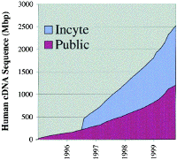
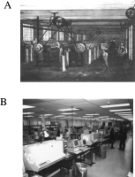
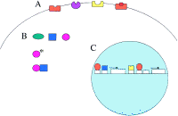
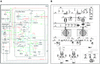

Genomic Biology
Roger Brent
a modified version of this review
appeared in Cell, 100, 169–183,
January, 2000.
Genomics is changing our understanding of biology. At present, the greatest
impact of genomic research has come from DNA sequencing projects.
These have revealed the genetic complement of yeast, worms, and
flies, and more than 20 species of bacteria and provided access to the encoded functions of these organisms. Analysis of genomes has also provided insights into polymorphisms within species, protein interaction, and
evolution. Other genomic (defined as high-throughput, not necessarily hypothesis–dependent) methods that examine mRNA and proteins will offer
insights into mRNA expression, protein expression, protein localization,
and protein interactions and may cast light on the flow of information
within signaling pathways. The volume of genomic information has prompted the
development of general experimental methods that allow quick tests
of the hypotheses it suggests. Insights from genomic biology will
greatly affect medicine and agriculture. Genomics is also changing
the biological community. At its beginning, biology involved observing nature
and experimenting on isolated parts of it. Genomic research now
generates new types of complex observational data derived from nature.
For now, a time when much of the data are closely linked to observation
and when some researchers have ceased to perform hypotheses-driven
research, researchers still need to practice critical thought. In the future,
to make sense of the data, genomic researchers will need to partly
recapitulate the development of biology itself, by devising new
ways to handle and isolate appropriate subsets of the information
and new heuristics for reasoning from that information and suggesting further experiment. Genomics may also lead to a more radical development. As
the genomic inventories approach closure, the mass of this data
will spur attempts to devise computational frameworks that integrate
biological knowledge about cellular components and attempt to predict
system behavior. During the early twenty-first century, this more predictive
biology will have positive consequences for health and agriculture
and will speed the development of a design-based biological engineering
of cells and organisms to perform new functions.
From the Beginning to the Present
Some Perspective
Biology arose from the study of nature and from performing experiments on isolated
parts of it. Genomic biology provides new kinds of data that are derived from
nature and are nature-like in their complexity. During the late 1980s, genomics
referred to the generation and analysis of information about genes and genomes,
so long as that information could be produced systematically, by DNA sequencing
projects, which were resources specialized for that purpose. During the middle
1990s, a new term, functional genomics, came to refer to generation and analysis
of the information about what genes do, so long as the information was produced
systematically. Since then, a number of other terms have been introduced: proteomics,
transcriptomics, etc.; in fact, Weinstein, 1998
has suggested that all such work be termed ''omics.'' Whatever the merits of
that idea, here I will use genomics in a broad sense, to mean the generation
of information about living things by systematic approaches that can be performed
on an industrial scale.
Information from Gene Mapping and Sequencing
The wealth of information coming from sequencing projects for bacteria, yeast,
flies, mice, and humans has been reviewed extensively elsewhere (Science,
October 15, 1999, and references therein). However, no review on genomics would
be complete without mention of the following general findings.
Linkage Information. The finding (Kan and Dozy, 1978 )
and elaboration into doctrine (Botstein et al., 1980 )
that DNA polymorphisms (then, restriction fragment linkage polymorphisms, or
RFLPs; now, single nucleotide polymorphisms, or SNPs) could be followed as Mendelian
alleles in pedigrees led to a great expansion of the density of genetic maps
in all organisms so studied. The ability to find such systematically and unambiguously
scorable markers linked to inherited traits allowed isolation of genes responsible
for these traits (the first being for that for Huntingtons
chorea [ Gusella et al., 1983 ])
by DNA walking (Bender et al., 1983 ).
Most human medical genetics still depends on isolation of individual disease
genes by this tactic.
Information about Genome Organization. Sequencing a genome reveals the
organization of its contents. Perhaps surprisingly, even a first order inspection
of this organization is often interesting, revealing facts whose functional
significance is sometimes unclear but that likely reflect some kind of previous
selection rather than evolutionary accident. For example, consider Saccharomyces
cerevisiae. The genome shows evidence of two primordial doublings (Wolfe
and Shields, 1997 ;
Keogh et al., 1998 )
that resulted in a tetraploid genome from which genes were subsequently lost.
In this genome, redundant functions are conserved near the telomeres, while
essential genes are not found there (Winzeler et al., 1999 ).
In S. cerevisiae, small chromosomes have higher recombination rates than
larger ones, and ORFs with higher than average CG content at silent positions
tend to be on those smaller chromosomes (Bradnam et al., 1999 ).
AT-rich areas near centromeres and telomeres show lower rates of meiotic recombination
than the rest of the genome (Goffeau et al., 1996 ).
ORF density falls off near telomeres (Bradnam et al., 1999 ).
All fascinating, but so far uninterpretable.
Information about Protein Complement. The combination of sequences from
genomic DNA, EST, and full-length cDNA has resulted in increasingly complete
lists of encoded effector molecules. Having more genomes gets one more information,
in the sense that knowledge of a genes
function in one organism suggests functions for genes of similar sequence in
others. In fact, at least 10% of the papers in Cell in the past 15 years
have rested on this fact, and the inventors of the sequence comparison algorithms
FASTA (Pearson and Lipman, 1988 )
and BLAST (Altschul et al., 1990 )
may thus arguably share credit with the cited authors for many biological facts
uncovered during the past decade. Of course, absent sequence similarity to a
known protein, neither the biochemical nor the higher order function of a protein
is immediately apparent. Thus, at present, knowledge of the function of genomic
protein complements remains murky. The murk is deepened by the fact that most
sequences are of bacterial genomes and that most analysts who study these sequences
are more knowledgeable about microbial metabolism than other aspects of biology.
In consequence, the analysis of whole protein complements has been most useful
in understanding intermediate metabolism, and, for bacteria and sequenced eukaryotes,
most of the players in basic anabolism and catabolism are revealed. Beyond metabolism,
the general pictures of biological function revealed by coding sequences are
evocative but not conclusive: bacteria have more transporters than we had imagined,
and worms have more ion channels than they have nerve cells. At present, the
most important observation from genome sequence is probably that, depending
on ones criteria, the function of between
15% and 40% of the proteins encoded by any genome is not apparent from their
sequence.
Information about Gene Regulation. Although DNA sequence does not immediately
reveal information about gene regulation, sequencing projects have made possible
the large-scale identification of sites of regulatory protein action. This ability
comes from comparison of sequences near coding regions in somewhat diverged
organisms (Caenorhabditis elegans and Caenorhabditis bergerac,
Drosophila melanogaster and Drosophila virilis, Mus musculus
and Fugu rubripes). Nucleotides conserved in noncoding regions between
these pairs of organisms identify functional sites, typically, sites of action
of regulatory proteins, and these sites typically have conserved function when
used to regulate transgenes (see for example Venkatesh et al., 1997 ).
Although it is useful to identify regulatory sites from sequence alone, a comprehensive
understanding of how those sites work together with their cognate proteins to
regulate gene expression will have to await other technologies.
Information about Phylogeny and Evolution. One of the most marvelous
attributes of organismic DNA sequences is that they show the changes that have
led to speciation and existing phylogeny. By making evolutionary change so starkly
visible, the ability to track evolution by its DNA trail makes the concept far
less abstract. DNA sequencing has already revealed a number of genomic rearrangements,
including duplication events and syntenic rearrangements for many phyla. In
one significant example, it is now possible to speculate that vertebrate genomes
may represent a quadruplication of an ancestral metazoan genome that also gave
rise to worms and flies (Spring, 1997 ).
Analysis of DNA sequence has also led to readjustments in phylogenies that were
based on morphological or paleontological information. For example, early on,
working with 18S ribosomal sequences, Lake and his coworkers suspected that
lophophorates are protostomes (Halanych et al., 1995 ),
and the accumulation of DNA sequence data since then has confirmed that insight
and led to the current picture (Aguinaldo et al., 1997 ;
de Rosa et al., 1999 )
in which all bilateral animals are either deuterostomes, lophotrochozoans, or
ecdysozoans. More recently, Venkatesh et al., 1999
have used spliceosomal introns, some of which hopped in rather recently, as
markers to define clades in the ray-finned fishes, and, in the process, helped
fine tune this phylogeny. Finally, DNA sequence demonstrates numerous individual
instances of horizontal gene transfer among prokaryotic species (Jain et al.,
1999 ).
In all, the next few decades should result in a much more complete picture of
the natural history of living species.
Genomic Information on the Way
DNA Sequencing and Mapping. After information on the sequence of various
species, the Next Big Thing coming from DNA mapping and sequencing efforts is
information about the genetic polymorphism within species. Different people
are said to differ at 1 in 900 base pairs (Barbujani et al., 1997 ).
The US government now officially (see http://www.nhgri.nih.gov/DIR/VIP/glossary)
defines polymorphisms as sets of alleles in which the rare form allele is present
in more than 2% of the population, with any rarer allele defined as a mutation.
Given the genetic diversity of the US population, this definition means that
many alleles that we call polymorphisms are rarer in other populations and would
count as mutations, for example, in Slovenia or Finland. In fact, polymorphism
data has already allowed reconstruction of the migration of different human
populations during prehistory (Jin et al., 1999 )
and is beginning to shed light on other population-related historical and anthropological
issues (for a review, see Owens and King, 1999 ).
For polymorphisms in coding sequences, regulatory regions, and splice junctions
where location suggests that they have functional consequences, identification
of the polymorphism will often yield more questions than answers: although primitive
tools (antisense nucleic acids, nucleic acid aptamers, ribozymes, and peptide
aptamers) for probing the consequences of functional changes in proteins exist
(see below), there is now a dearth of methods to give insight into the functional
consequences of variation in noncoding sequences. It now seems likely that most
polymorphisms outside of coding and regulatory regions will lack functional
consequence but will be useful as mapping markers for nearby functionally important
alleles. Whether functional or not, many polymorphisms will be closely linked
to inherited traits, and identification of them (see below) will thus trigger
a flood of more or less accurate predictions about genetic predispositions and
outcomes without immediately suggesting means to affect those outcomes.
Other DNA Genomics. In short order, it is likely that comparative genome
hybridization (CGH) will give insight into the natural history of human cancer
(Kallioniemi et al., 1992 ).
CGH can be performed, for example, by making an ordered array of human DNA from
intervals along the genome, then comparing hybridization of differently labeled
normal and tumor DNA to that array. Application of this technique in clinical
settings should in a few years result in a definitive taxonomy of larger-scale
differences between DNA in different tumor types and wild-type DNA. Such work
should thus, at a minimum, lead to completion of the set of human recessive
oncogenes for which loss of heterozygosity (LOH) can lead to cancer development,
and to identification of LOHs and other DNA alterations that are associated
with different clinical outcomes.
The next few years will also see a great deal of information gained from more
advanced DNA analysis tools. For example, there is increasing evidence that
covariation of mutations in the coding sequences of unlinked genes during phylogeny
is a sign that those proteins may interact (Horn et al., 1998 ).
More recently, several workers have shown, for proteins involved in metabolism,
that if there exists an organism in which two coding genes are fused, that those
two gene products may interact in other organisms in which the genes are not
fused (Enright et al., 1999 ;
Marcotte et al., 1999a ,
Marcotte et al., 1999b ).
There are likely to be other kinds of information to be gleaned from DNA sequence
alone. Because most computational methods are easier than corresponding wet-lab
methods, biologists will push the computers as hard as they can.
RNA Genomics. A few years ago, it became technically possible to detect
the level of expression of large numbers of mRNAs in a sample at once, by hybridizing
to surface immobilized arrays of nucleic acids. The first of these developed
used arrays of photolithographically synthesized oligonucleotides (Lockhart
et al., 1996 ).
The use of these arrays to monitor gene expression got off to a slow start,
largely because the technology was developed commercially and was expensive,
which speeded the development of a number of non-array-based methods to survey
mRNAs that are not widely used in research labs and that I will not review here.
More recently, cheaper and nonproprietary means to produce arrays from PCR products
were developed (DeRisi et al., 1997 ).
Propagation of this later technology for making nucleotide arrays has greatly
increased the speed at which gene expression monitoring methods are being adopted
and producing important results.
One of the first fruits of these experiments has been the identification of
new genes involved in known processes. For example, in S. cerevisiae,
a number of proteins form a protein degrading complex, the anaphase promoting
complex or APC, that is needed for cell cycle progression. Gene expression monitoring
experiments reveal that mRNAs encoding this complex are expressed during sporulation.
This result indicates that protein degradation handled by this complex may be
needed for progression through sporulation as well (Chu et al., 1998 ).
Similarly, in human fibroblasts, genes involved in wound healing are expressed
when starved fibroblasts are induced to proliferate by serum. This fact is at
least consistent with the idea that wound healing is a normal function of proliferating
fibroblasts and has caused many investigators studying the response to serum
stimulation to see their results in the light of this biology (Iyer et al.,
1999 ).
The promise of gene expression monitoring is not confined to identification
of new genes involved in known processes. For example, by comparing whole genome
mRNA expression patterns among a number of mutant strains of S. cerevisiae,
Holstege et al., 1998
suggested a new function for Srb5 and Srb10, two proteins associated with the
transcription apparatus. These results suggest that Srb5 and Srb10 are involved,
respectively, in yeast mating and nutrient sufficiency. This study thus suggested
new regulatory relationships in which ancillary transcription factors were direct
targets for signal transduction pathways.
Because it is possible to isolate different functionally important mRNA subpopulations,
gene expression monitoring can give insight into different aspects of cell biology.
For example, isolation of cellularly encoded capped mRNAs after poliovirus infection
has allowed researchers to identify cellular genes that may be needed for productive
viral infection (Johannes et al., 1999 ).
Isolation of mRNAs associated with polysomes makes it possible for researchers
to observe expression of genes whose mRNAs are translated. Isolation of mRNAs
associated with the endoplasmic reticulum should allow analysis of expression
of genes whose products are expressed on the membrane or secreted. Isolation
of newly synthesized mRNAs should allow crude determination of rates of synthesis.
Because of the large number of techniques that can define different functional
mRNA classes, the utility of gene expression monitoring for addressing cell
biology is likely to increase.
Protein Genomics. Three ongoing kinds of experiments are now systematically
producing information about genome encoded proteins. First, large-scale surveys
of protein content in samples using two-dimensional gels (OFarrell,
1975 ),
coupled, typically, with identification of the protein in individual spots by
mass spectrometric determination of molecular weight and sequence, have resulted
in some knowledge of the proteins expressed under different conditions in S.
cerevisiae (Shevchenko et al., 1996 )
and Hemophilus influenzae (Link et al., 1997 ).
A good deal more such information for other organisms and cell types has been
collected commercially and is not in the public domain.
Second, again in S. cerevisiae, the facility with which genes can be
replaced by derivative genes and altered by insertional mutagenesis has made
possible an effort to determine the subcellular localization of a significant
portion of the proteins expressed in this organism. In these experiments (Ross-MacDonald
et al., 1999 ),
proteins encoded by the yeast genome are systematically tagged with an epitope,
and the localization of the epitope is monitored by immunofluorescent light
microscopy.
Third, two-hybrid experiments (Fields and Song, 1989 )
can be scaled up by interaction mating to allow the mass testing of interactions
among binary protein pairs (Finley and Brent,
1994 ).
This tactic is being used to survey the interactions among the protein products
for which the equilibrium dissociation constant of the binary interactions is
tighter than about <10 -6 M (Estojak et al., 1995 ).
Information from such surveys, including interactions among mammalian and yeast
proteins, is now stored in searchable databases of various types, and it seems
likely that data from a large survey of interactions among most of the proteins
encoded by S. cerevisiae will be available within a year. Again, a great
deal more information from this approach is not in the public domain.
Genomic Information on the Horizon
The kinds of systematically generated information noted above are only a start.
The next 10 years will see a proliferation of new types of genomic data.
First, a large-scale effort to solve protein structures is now beginning. This
structural genomics initiative (in the US, the Protein Structure Initiative)
is still taking shape. Here, a major issue is how many prototype protein structures
must be solved in order to enable accurate modeling by homology of proteins
that are related to the prototype by sequence. The ability to make a good guess
at the structure of most proteins will have massive long-term returns. These
include a greatly facilitated and broadened ability to design structural classes
of small chemical compounds that can inhibit the action of given classes of
proteins and a scientifically enlightening correlation of different protein
structures and substructures with their function, at whatever level their function
can be defined—enzymatic function, function at the level of protein interaction,
etc.
Second, for organisms whose protein complements have been sequenced, systematic
precipitation of individual affinity-tagged bait proteins from cellular extracts
allows identification of the other proteins that complex with and are coprecipitated
by the bait. The most versatile means of identifying those coprecipitated proteins
is protein mass spectrometry. Knowledge of genome sequence enables prediction
of their mass, and comparison of predicted mass with that measured by mass spectrometry
often allows identification of the coprecipitated proteins (Grant et al., 1998
).
This coprecipitation/mass spectrometry approach is seemingly better suited to
determining the membership of high affinity, multisubunit protein complexes
than two-hybrid approaches, and information from it is likely to flow in increasing
amounts in years to come. The coprecipitation approach can also enable exploratory
biochemistry: recently, Martzen et al., 1999
made use of a collection of yeast for which individual proteins were Gst tagged.
They precipitated the Gst-tagged baits, screened the coprecipitates for new
biochemical activities, and found them, including a hitherto unknown phosphodiesterase,
and a cytochrome C methylase.
Third, in certain organisms, it is possible to generate large-scale collections
of uniquely identifiable loss-of-function mutations. Such manipulations are
relatively easy in yeast and, recently, have been made possible by genome-scale
insertion mutagenesis in embryonic stem cells from Mus musculus (Yoshida
et al., 1995 ;
Hicks et al., 1997 ;
Zambrowicz et al., 1998 ).
This ability to generate such mutant collections has spawned large-scale efforts
to assign function to the wild-type genes based on the loss-of-function phenotypes.
Generally speaking, the difficulty in deriving information from the study of
such mutants lies in guessing function from the mutant phenotype. In yeast,
it is easy to score a few phenotypes, but although some of these (such as nutritional
auxotrophy) can point directly to the function of a wild-type gene, others (such
as cold sensitivity) do not. In mouse, by contrast, the problem is not the paucity
of phenotypes, but rather their great number, so that the effects of a loss
of function can be manifested in any of hundreds of different cell types at
any stage throughout development. Nor are these mouse phenotypes necessarily
easy to score. Adequate description of the phenotype of a given mutation may
require a great deal of knowledge of mouse biology, anatomy, histology, and
pathology. Moreover, in mouse, as in yeast, some phenotypes point directly to
function, but many others do not.
Two approaches offer some hope in overcoming the limitations. First, in C.
elegans, a great deal of progress has been made in systematizing the task
of scoring mutant phenotypes, so that at least this part of the work can now
be performed by relatively untrained people. For the mouse, correlation of molecular
phenotypes, for example, changes in gene expression, with organismic ones should
allow a similar systematization. Second, and perhaps more originally, there
has been a gradual development of genomic tactics to give information about
the contribution genes make to organismic fitness and survival under different
selective conditions. These schemes, until now only demonstrated for yeast,
use large mutant collections in which the individual members can be distinguished
by nucleic acid techniques: by anchored PCR using a DNA tag such as a transposon
(Smith et al., 1996 ;
Ross-MacDonald et al., 1999 )
or by a coded nucleotide sequence specific to each mutant gene (Winzeler et
al., 1999 ).
One collection is haploid cells with loss-of-function mutations. Another is
diploid cells that are haploid for different loci. When such collections are
subjected to growth under some selective condition (including, for example,
nutritional deprivation, temperature shift, overexpression of a gene, or presence
of a chemical compound), census of the members of the collection present in
the selected population at different times reveals what genes are essential
for growth under that condition, which are useful, and which are irrelevant
(Giaever et al., 1999 ;
Winzeler et al., 1999 ).
These approaches are likely to be extended to other organisms, at least to worms.
Fourth, new technologies under development will, if successful, lead to systematic
production of new kinds of functional information. For example, in an approach
pioneered by Tsien and coworkers (see Heim and Tsien, 1996 )
fluorescence resonance energy transfer (FRET) can reveal protein interactions
in living cells. In such experiments, one interacting protein is fused to a
GFP-derived FRET donor and the other to a GFP-derived FRET acceptor. Interaction
between the proteins is monitored by fluorescence microscopy and/or light spectroscopy;
if FRET occurs, the donor fluorescence is reduced and the acceptor fluorescence
is increased. Although implementation of this idea on a genome-wide scale would
require surmounting a number of technical issues (Mendelsohn and Brent,
1999 ),
its use has already revealed mitochondrial interactions between Bax and Bcl-2
(Mahajan et al., 1998 )
and allowed real time assay of interaction among components of the nuclear pore
apparatus involved in protein import (Damelin and Silver, 2000 ).
Still more sophisticated ideas are under development. These include methods
to characterize the static and dynamic complement of cell proteins, protein
association states, protein modification states, and proteins bound to regulatory
sites on DNA. Those methods that give useful information relatively cheaply
will be scaled up. The right concatenation of methods may allow understanding
of the flow of information through the cell and how that information is used
to regulate cell function.
Using Genomic Data to Gain Biological Understanding
The difficulty in using genomic data to quickly generate biological knowledge
has led many contemporary biologists to a degree of cynicism about the genomic
enterprise. Genomic data have common characteristics that would seem to justify
a measure of cynicism. First, genomic data of all types are typically lower
value adding than those obtained from classical ad hoc experimental approaches;
they typically do not immediately address the questions about regulation, mechanism,
and decision making that are of greatest interest to contemporary biologists.
Second, due to limitations of the individual methods and pressure to mass produce
the information, all forms of genomic data are prone to errors. Even sequence
data, which are subject to rigorous quality control, become encrusted with half-truths
and outright falsehoods at the moment they are annotated. Third, with the exception
of sequence data, both the computational methods and the underlying logic used
to make inferences from genomic data are in a primitive state characteristic
of an observational stage of science. Consider gene expression data. The first
clustering methods (Weinstein et al., 1994 ,
Weinstein et al., 1997 )
led to faster (Eisen et al., 1998 )
and more sophisticated means (Tamayo et al., 1999 )
to group individual observations so that one can think about them. Analytical
methods now under development often rely on a single, simple concept: ''somethings
different over here; perhaps its important.''
And some of the most sophisticated observation studies to date have relied on
logical tactics that, although they work, are best described by the names of
their corresponding fallacies: a gene whose transcription behavior resembles
that of a known gene may function in the same process as the known gene (guilt
by association); a gene whose transcription is induced before transcription
of a group of another genes may regulate transcription of that group of genes
(''post hoc, ergo propter hoc'' or ''after this, therefore because of this'').
Logical and computational techniques to make sense of protein interaction data
are even less well developed. For these reasons, information gained from genomic
data rarely rises to the level of the conclusions that biologists prefer but
often hovers at the level of suggestion, indication, inference, or testable
hypothesis.
One obvious path toward raising the biological value of genomic information
is to combine different genomic data types. For example, the conjunction of
a finding that two proteins can interact with a finding that mRNAs encoding
those proteins are expressed in the same cell at the same time strengthens the
idea that the two proteins do interact. Computational combination of different
data types to make stronger inferences is a difficult problem but one whose
solution will offer significant near-term benefits (see below).
Genomic Experimentation
A good deal of genomic information is produced systematically in facilities
and by work teams specialized for that purpose. As mentioned, it may be possible
to combine different kinds of this systematically generated information to get
closer to an understanding of function. However, at the moment, we are not in
that promised land, and most of the strong conclusions will continue to come
from directed experimentation. The problem, of course, is that directed experimentation
is difficult, typically requiring bright researchers who have trained for years
in contemporary biology and who are expert in the system in which the experiments
are performed. There are not enough such researchers to use existing tactics
to solve existing biological problems in reasonable time. Thus, adequate progress
in increasing biological understanding will depend on the development of better
techniques.
It is possible to list the ideal attributes of such genomic experimental techniques.
First, of course, they should be cheap, accessible, nonproprietary, and undertakeable
ad hoc by individuals and small research groups seeking answers to specific
questions. Second, they should be generic, in that they should not depend on
special properties of the organism that contributed the genes. Third, and in
the same vein, they should not require difficult genetics, breeding, careful
observation, or insight to be performed—in fact, not to put too fine a
point on it, the best future experimental methods to help understand biological
function should not require that the experimenter be highly skilled. The fact
that such genomic experimental techniques will not require great skill will
mean that it will be possible to systematize them, so that if there is a clear
need to perform them upon entire genomic complements, they can be scaled up
and industrialized.
A number of methods to probe the function of individual gene products seem to
fit this description. In each case, these use agents that can be obtained or
isolated with relatively little effort and that promise insight into the function
of single genes and small gene collections. At present, these agents are all
affinity reagents that can be isolated from combinatorial libraries, including
antisense nucleic acids (Izant and Weintraub, 1984 ;
Melton, 1985 ),
nucleic acid aptamers (Ellington and Szostak, 1990 ),
peptide aptamers (Colas et al., 1996 ),
and antibodies from recombinant DNA libraries (Ward et al., 1989 ).
In the future, these agents may include small molecules that interfere with
the function of individual gene products. It is not clear that collections of
such compounds can be made, but, if they can, their manufacture will be beyond
the abilities of individual researchers, who would instead identify them and
obtain them from centralized resources.
All of these approaches share the characteristic that the perturbing agent is
dominant, and so their introduction into diploid cells leads to the loss of
the function of the product of both copies of the gene. However, at least for
peptide aptamers, which display a conformationally constrained variable region
from a rigid scaffold, it is possible to isolate molecules that recognize one
allelic form of a protein but not the other (Xu et al., 1997 ).
Allele-specific interfering agents are likely to give insight into the diversity
of gene function caused by polymorphism in protein coding regions. Very recently,
it has also proved possible to use these agents in forward-''genetic'' schemes:
in yeast, peptide aptamers have been isolated to cause a phenotype and then
used as baits to identify proteins and protein interactions that cause the phenotype
(Geyer et al., 1999 ;
Norman et al., 1999 ).
Consequences of Genomic Research
Changes in Health and Agriculture
Biological understanding affects the human condition via two systems that develop
and make use of it: the medical–pharmaceutical system and agriculture.
To date, genomic research has most heavily influenced the discovery research
sector of the pharmaceutical industry. Here, in many companies, combinations
of genomic information, including sequence data, gene expression data, and protein
interaction data, are used routinely to identify proteins that might make good
targets for drug discovery efforts. As soon as they are robust enough to work
reliably in industrial labs, other genomic methods, including selective growth
of pools of mutants, large-scale gene knockouts in mouse, and aptamer-guided
target selection will be used to identify and validate drug targets.
It will not be long before genomic methods begin to affect downstream aspects
of pharmaceutical research and development. Correlation of different patterns
of gene expression with different pharmacological and toxicological outcomes
will allow gene expression data to supplement and perhaps substitute for more
conventional toxicological studies on animals. Analysis of human polymorphisms
will allow delineation of patient subpopulations during clinical trials. For
example, people who carry certain allelic variants of cytochrome P450 CYP2D6
do not convert codeine into morphine and do not benefit from the drug, while
people with amplifications in CYP2D6 metabolize codeine so well that standard
doses are ineffective (reviewed in Eichelbaum and Evert, 1996 ).
Similar polymorphism-based stratification of patients will help identify subgroups
that benefit from or are adversely affected by tested drugs. Similarly, it is
likely that gene expression monitoring will be developed to the point that changes
in patterns of expression of particular genes, in patients with particular genetic
makeup, will provide early warnings of therapeutic or toxicological outcomes.
Stratification of patient populations and use of faster techniques, such as
gene expression monitoring, to forecast outcomes should shrink the number of
patients and the length of time for drug trials.
It is difficult to exaggerate the benefits that should flow from these changes
in drug development. Use of genomic techniques should place the classification
of drug side effects and adverse reactions on a more rational and mechanistic
basis and eventually allow patients to receive drugs appropriate for their genotype.
This development should permit the development of prophylactic drugs whose preventive
effects are sufficiently beneficial and whose side effects are sufficiently
mild to allow them to be taken for decades. Perhaps as important in the long
term, by decreasing the time and number of subjects needed for clinical studies,
the use of genomic information should greatly decrease the cost of developing
new drugs. A radical decrease in cost would permit drugs to be developed for
smaller markets, including particular genetic subpopulations and patients with
diseases endemic to poorer countries.
In clinical medicine, the classification of patient populations by genotype
will allow careful examination of which therapies are effective and which are
not on particular subtypes. Such subdivision will also allow simple longitudinal
studies that identify genetic markers that confer predisposition to many diseases.
These developments make it likely that the decades ahead will be an anxious
interlude in which ability to predict predisposition will outstrip mechanistic
understanding of the conditions deep enough to guide development of therapeutic
pharmaceuticals. Diagnostic and prognostic ability without effective drug therapy
is difficult for patients, physicians, and the health care system. For example,
at present the most effective therapeutic response to the knowledge that a patient
carries a predisposing mutation in BRCA1 is prophylactic mastectomy (Hartmann
et al., 1999 ).
By contrast with drug development and health care, which intervene directly
in human biology, the revolutionary impact of genomic technologies on agriculture
will likely encounter fewer barriers. In fact, good polymorphism and sequence
data for many economically important plant and animal species already exists
(in private hands). Such genetic, non-mechanism-based, correlative data are
even more immediately useful in agriculturally important species than in medicine,
because breeding allows the correlation of genetic markers with favorable traits
in offspring of a cross, and the use of genetic methods to identify and manipulate
subtle, multigenic traits is well accepted (quantitative trait localization,
or QTL [ Sax, 1923 ;
Edwards et al., 1987 ]).
Moreover, it is easier to test the utility of an experimental intervention in
plants and animals than it is in people, because many of those manipulations
can be based, not on intervention with specific small molecule chemicals, but
on changes in the organisms DNA. Although
agricultural genetic manipulations will inevitably be regulated by governments,
the ease of suggesting and making desired manipulations should ensure that,
by the middle of this century, most of the plants in any cultivated landscape
will carry genetic alterations guided by genomic research.
Changes to the Biological Enterprise
Deemphasis of Hypothesis-Driven Research. The idea that valuable knowledge
can be gained from the systematic production of simple kinds of biological information
has lessened the emphasis on strictly hypothesis-driven research. The idea that
science proceeds by the formulation and careful testing of hypotheses can be
traced at least to Francis Bacon, more than 350 years ago (Bacon, 1620). Although
most contemporary biologists believe in this idea, most also have personal experience
with successful inquiries that were better described as observation-, obsession-,
engineering-, or ''what if''–driven, in which testing of hypothesis played
a small part. In fact, in a great deal of biology, the Baconian picture is best
applicable to troubleshooting (the same reason it is used, for example, by computer
repair technicians and automobile mechanics). Certainly, much ongoing genomic
research is better described as observational than experimental, and, as mentioned,
its findings are sometimes better described as inferences or hypotheses for
further testing rather than rising to the level of the conclusions that biologists
are trained to seek. Moreover, many hypotheses resulting from genomic observation
will never be tested because scientific standards have changed. For example,
in 1988, the finding that a protein contained a homeobox might suggest that
it bound DNA and regulated gene expression, but that suggestion would probably
have been tested experimentally. In 2000, we would probably accept that claim
without further experiment.
In biomedical research, the emphasis on hypothesis is one consequence of the
concordat between biologists and physicians that enabled the US NIH to support
basic research. The bargain has served medicine well—it vindicated the
idea that basic research leads to better medicine, and medical researchers,
as part of their training, were indoctrinated with the idea that they should
frame hypotheses and test them by controlled experiments. The fact that many
of the hypotheses were stereotypical (e.g., transcription of genes in the kidney
may be controlled by transcription regulatory proteins present in the kidney)
made possible a rapid expansion of mechanism-based biomedical research, particularly
when molecular biological experimental techniques became more accessible (Maniatis
et al., 1982 ;
Ausubel et al., 1987 ).
However, this agreement may not have served biology as well as it served medicine.
As insistence on the hypothesis-driven heuristic became enshrined and championed
(often by reviewers and study section members), the biological community became
less tolerant of other kinds of experiments and experimenters. Young scientists
are sensitive to perceived hypocrisy (Lewis, 1925 ),
and insistence on a framework visibly at variance with the way some research
is done may even have driven some of them into other lines of work.
The fact that genomics is forcing biologists to remember that not all research
is driven by hypotheses is not to say that biologists can stop thinking. At
least in biology, it is fallacy to think that accumulation of data alone can
lead to insight. However, there are people who enjoy collecting information.
If, in the limit, there were to arise obsessive–compulsive types whose
highest goal was to accumulate data, biology as a whole might not lose so long
as other people learned to analyze the data and test the analysis by experiment.
Enforced Dialog with Computer Scientists. That genomic information comes
computer ready, that individual observations are typically are not typically
very value adding, and that there are so very many individual observations all
have led to the utter dependence of genomic research on computer science. This
reliance will only increase. Each new type of genomic information is different
and requires different structures to store it, different defined relationships
among its data elements, and different tools to access and understand it. This
level of computer work is often tedious for the biologist. Many of the abstractions
needed to understand the computational treatment of genomic information come
from the realm of relational databases (Date, 1994 ).
These concepts, including the reduction of a universe of knowledge to defined
types of entities, the enumeration of those entities in tables, and the connection
of those entities by defined relations, date only from the 1970s (Codd, 1970
). Many
people find it difficult to think along these lines. However, although it is
difficult, it is urgent that high-level biologists establish a more effective
dialog with those computer scientists versed in the classification and retrieval
of information and for these biologists to participate in serious discussions
to establish the frameworks (data entities, allowed relationships, meaningful
relationships) for each new data type. Because newer data types will continue
to be developed, this sort of database-intensive, bioinformatic work will need
to continue for decades. However, beyond this database bioinformatics, the challenges
presented by integration of different genomic data types with one another and
with natural language data, and by construction of higher-level computable representations
of biological knowledge, dictate that biologists will also need to work with
outstanding computer scientists outside of the database field.
Increased Class Stratification and Division of Labor. Access to the newest
results, the most talented colleagues, the most modern methods, and the best
reagents and equipment has always been uneven. Genomics is accentuating this
inequality in at least two ways. First, a great deal of genomic data is produced
by corporations and is slow to find its way into the public domain. As this
article goes to press, the sequence of Drosophila melanogaster has been
available to corporate partners of Celera for more than a month; it will be
released to the public sometime during 2000. Similarly, one Incyte database,
accessed by subscription, has consistently contained more human cDNA sequence
than the equivalent public databases (Figure 1). As new types of genomic information
are developed, corporations will arise to produce it, and the business plans of
those corporations will often involve selling the information only to a few large
corporate partners. Second, computational tools that allow the best use of genomic
information will often be first perfected by corporations whose business models
require them to supply those tools to corporate partners. Although it is in the
long-term interest of both the public and private sectors that the gap in access
and ability to use genomic information not grow wider, the construction of public
policies and commercial business models that favor this outcome is now an unsolved
problem.

| Figure 1. Private and Public Genome Data Figure shows total human cDNA sequence (in millions of base pairs) in a private database (LifeSeq, Incyte) and a public one (dBest). Subscribers to the private database can, of course, also access the public data. The quality of the private sequence is said to be higher than that of the public (LifeSeq statistics courtesy of Incyte, Inc.). |
| View larger version: [in this
window] [in
new window] |
|
Along with increased class stratification has come an increased division of labor. Even 10 years ago, most research groups generated most of their own data, performed their own analysis of it, and, based on that analysis, performed new experiments to generate more data. Genomic research has disrupted that cycle by creating a class of specialized information producers and a set of specialized industrial activities collectively referred to as production (Figure 2). As with previous industrial transformations, production workers have become less autonomous, and those who own or control the means of production have become more powerful. The industrialization of production of other types of biological data may hasten the rise of a new type of researcher, the ''analyst,'' who makes use of the information to make suggestions, but who is not particularly insightful or skilled about devising tests for them. It may also sharpen the function of experimenters by defining their role as adding value to the systematically produced data and inferences from it by focused experiments.

| Figure 2. Production (A) Cotton thread production. Drawing carded cotton into yarn, England, presumably Lancashire, circa 1820 (courtesy of Yale University Gallery). (B) Human cDNA sequence production. Sequencing ESTs, Palo Alto California, circa 1995 (courtesy of Incyte, Inc.). |
| View larger version: [in this
window] [in
new window] |
|
Stimulation of Design-Based Biological Engineering. Biological knowledge affects the human condition via medical and industrial technologies. At the core, both technologies are engineering endeavors, in that both involve the informed and imaginative use of existing knowledge and techniques to produce specified outcomes (for medicine, diminution of suffering; for industry, outcomes that serve some market). Despite that similarity, the education of engineers differs from that of physicians and industrial biological scientists. As undergraduates, engineers are encouraged to value achievement of technically difficult goals for their own sake. For example, consider the fabled internet server in 1975 that revealed the number of cans in the Coke machine in a Carnegie Mellon University basement (Kelly, 1993 ). There is at present no understanding of this hacker mindset, the joy in engineering for its own sake, in the biological community.
The genome projects, with their promise of complete parts lists, have caused would-be engineers to start turning up in biology labs. It is unclear whether the first products of these cellular hackers, typically recreations of cellular clocks, switches, oscillators, etc., will themselves have any immediate positive impact on biology (see Elowitz and Liebler, 2000). However, the engineers who build these devices will affect biology profoundly. By doctrine and training, modern engineers simulate devices whenever possible before they build prototypes. For example, nowadays, almost all digital and analog circuits are first designed and tested using a particular, decades-in-the-making-and-improvement simulation program known as SPICE (McCalla, 1988 ). Even absent stimulus from biologists, this drive to perform engineering with a rigorous design component will spur development of biological simulations and the collection of information to populate them.
Longer-Term Challenges for Genomic Biology
Developing New Devices and Techniques
Observational genomic techniques such as gene expression monitoring or protein interaction surveys are often compared to observational scientific instruments such as telescopes and microscopes. To make this comparison is to ask whether the data acquired by existing genomic methods is as scientifically important as the data acquired by astronomers and microscopists. As mentioned above, as biologists discover better ways to use the new information, this question will seem less compelling. Meanwhile, the comparison does have the virtue of making the genomic methods look inadequate and does stimulate thinking about the sorts of observations future genomic biologists could make that would be of more immediate biological importance. Note, when we are discussing observational science, that observations can be made with miniature instruments, with laboratory instruments, with observatories, or with production lines, but that the capital cost determines the number of different observations and experiments one can do and thus probably determines how rapidly knowledge can advance.
With this comparison in mind, let us imagine three types of devices, or scopes, that would provide information about cells that biologists would deem important (Figure 3). The membrane scope would reveal which receptors were expressed on a cell membrane or not and which were bound by ligand. The cytoplasm scope would reveal the presence, absence, abundance, modification state, and association state (if in a protein complex, the identity of the partners) of a selected set of several hundred regulatory proteins. The DNA scope would allow scientists to observe which regulatory sites in a cells DNA were bound and by what regulatory proteins. The sooner we start imagining how to systematically generate this information, the greater the chance we will be able obtain it sometime during this decade.

| Figure 3. High-Value Functional Information (A) The identity of receptor proteins expressed on the membrane, and whether they are bound by ligand or not. (B) The identity of proteins expressed in the cytoplasm, their modification state, and the identity of proteins they are complexed with. (C) Sites in gene regulatory regions, and the identity of proteins bound to them. |
| View larger version: [in this
window] |
|
Coping with Weakly Penetrant and Modifier Genes
As articulated by Morgan, Sturdevant, Müller, and their students, the forward transmission genetic approach to understanding biological processes involves the isolation and collection of mutants that show specific phenotypic alterations, the identification of the genes that bear those mutations, and the subsequent study of those genes and their products. This approach was so powerful that investigators readily accepted the limitation that mutations that were lethal to the organism before the mutant phenotype could be scored would not show up in their mutant screens. By the 1960s, at the latest, the doctrinal cloud surrounding this classical genetic approach had added another element, which was that mutants that displayed weak phenotypes or that conferred inconsistent phenotypes in downstream genetic manipulations should not be included in the collection under study. By excluding weak and inconsistent effects (or, as its practitioners sometimes said, by letting the biology indicate the important genes and gene products), this heuristic has been instrumental in helping biologists focus on the genes that are most important.
However, the genome projects are showing us more genes than we knew
about before, and there is no reason to think that all of them are
responsible for strong, consistent effects. In fact, there is at least
some evidence to the contrary. For example, in C. elegans, the strongest mutations in a rho family GTPase (Zipkin et al., 1997 ),
in some genes that affect axon guidance (Peckol et al., 1999 ),
and in some genes that affect formation of dauer larvae (Thomas et
al., 1993 )
are incompletely penetrant. For the dauer mutations, incomplete penetrance is
due to the fact that there are genes with redundant functions, that
is, the mutations affect pathways for which there exist at least partly
parallel pathways. However, for others, the cause is unknown. Similarly, the world of plant and animal breeding has dealt from the beginning with genes whose effects, for example, on size or yield, may be consistent but
are subtle and quantitative. For both incompletely penetrant and weak
genes, isolation of and study of effects in individual mutant organisms
is difficult, and the best present approaches to their study rely
on techniques such as QTL (Sax, 1923 ;
Edwards et al., 1987 ;
Lander and Botstein, 1989 ).
These techniques require analysis of fairly large numbers of mutant
or hybrid organisms and quantitation of their effects on the population.
For traits of sufficient interest (say, susceptibility to carcinogens),
these methods will surely be applied to appropriate model organisms and will lead to identification of many weaker genes. These methods will likely be supplemented by functional studies. Here, approaches that create populations
of gene-tagged mutants, subject these populations to selection, and
monitor the contribution of individual genes to the fitness of the
population over time (Smith et al., 1996 ;
Ross-MacDonald et al., 1999 ;
Winzeler et al., 1999 )
suggest a way forward. In organisms and cells in which creation of
populations of tagged mutant organisms is difficult or impossible,
use of appropriately tagged ersatz genetic agents such as peptide
aptamers may provide an analogous path to identifying incompletely penetrant and modifier genes. Because it will be possible to control the temporal and
spatial expression of such agents, this approach would allow identification
of genes that affect specific processes but that are also necessary
for the survival of the cell or organism.
Moving from Databases to Biological Information Systems
To be maximally useful to biology, different types of genomic information will need to be better integrated and will need to be more easily combinable with the qualitative, narrative information now housed in the biological literature. The problems in getting to this point seem difficult but solvable. At the moment, there is, to put it mildly, a dearth of general methods to integrate different types of data residing in different databases. The standard notional solutions to the integration problem are either to put all the information into a single, large database or to persuade groups that maintain different databases to agree to organize them in standard ways with standard internal structures. Neither approach has been conspicuously successful to date. By contrast, individual translation programs that import data from one database into the other do work, but such programs need to be custom written by skilled workers who take into account the internal structures of both databases and who rewrite the translators when those structures change. There is some work on more general solutions to the translation problem, such as the IBM Garlic project, in which each database has added onto it a wrapper that, once written, communicates with a general purpose ''middleware'' program. Here, the wrapper needs only to be written once, and the user accesses only the middleware and neither sees nor needs to understand the structure of the underlying databases (Carey et al., 1995 ; Haas et al., 1997 ). Whatever the means used, integration of genomic data will take leadership and investment and willingness to confront the difficulties caused by errors particular to each data type. Similarly, genomic data need to be integrated in turn with classical biological information resulting from directed experimentation. At present, most such information is represented in natural language narratives that describe individual systems. These narratives typically include a large number of proper nouns (p66, superoxide dismutase), a smaller number of verbs (binds to, dephosphorylates, activates transcription), a smaller number of modifiers (many, some, rapidly), and a small number of prepositional phrases designating location (in the cytoplasm, near the membrane, on the DNA). The restricted vocabulary allows condensed symbolic representations of what is known; one such narrative, which represents the proteins that control control the mammlian G1-to-S transition, is shown in Figure 4A (Kohn, 1999 ).

| Figure 4. Computable Representations of System Data (A) Portion of regulatory network governing the mammalian G1-to-S transition. In this representation (Kohn, 1999 ), proteins and sites are connected by arrows, and the symbols at the heads of the arrows correspond to a limited number of regulatory events, such as protein dimerization, transcription activation, and the like. (B) Portion of propulsion and attitude control system in the Cassini Saturn mission. In this representation, tanks and engines are connected by pipes, and flow through the pipes is controlled by pumps and valves. Computation on this representation is usually semiquantitative, in that it for example is often sufficient to understand that a valve is open, closed, stuck open, or stuck closed (redrawn from information supplied by Nicola Muscettola, NASA Ames, and Brian Williamson, MIT). |
| View larger version: [in this
window] [in
new window] |
|
Fortunately, there has been significant progress from the AI community
in devising analytical and computational representations that manipulate this sort of qualitative and semiquantitative knowedge together with quantitative
data where that is known (Kuipers, 1994 ).
Although these representations might access databases, they bear more kinship with conventional expert systems. For example, Figure
4B depicts a part of the plumbing in the Cassini Saturn spacecraft.
Modern spacecraft sometimes carry computational representations that incorporate qualitative information (connecting pipes), semiquantative information
(a valve can be open, closed, stuck open, or stuck closed), and quantitative
information (the rate of fuel flow into the main engine). This representation
allows computation of fuel flows in the network when it functions
normally and recomputation, leading to rerouted flow, when the network is damaged.
Such mixed representations can be quite ambitious. Consider that,
beginning in the 1970s, and spurred in part by the need to provide
targeting information to precision guided munitions, the US government
funded Geographical Information Systems, or GISs (http://www.ucgis.org;
Foresman, 1980 ;
Abler, 1987 ).
These systems work because we can accurately describe geographical information with a restricted vocabulary. GISs contain a large number of proper names
(place names) that correspond to a smaller number of classes of entities
(cities, roads, boundaries) that are connected by a much smaller set
of relationships among those entities (direction relations, topological
relations, the distance relation). Construction of GISs sparked a multibillion
dollar industry and development of a large amount of useful software.
For example, when one downloads driving directions between two addresses
from a service on the web, one is using a program that accesses a
GIS and uses the GISs underlying computational engine to generate the directions.
For a few prokaryotes and subsystems within eukaryotic
cells, we are at or near a level of description where we can enumerate
key players, molecules and sites, and where the number of classes of relationships among these entities is small. The next decade is likely to see the development of representations that allow computation on mainly
qualitative biological information for at least some prototype cells.
One early payoff of construction of such Biological Information Systems
might be an analog of the driving direction application: a program
that generates an exhaustive listing of known or predictable qualitative consequences of given perturbations, for example, inhibition of the function
of a particular protein phosphatase. Such first order computation
on biological information will be more than a teaching tool; for industrial
researchers, it may help choose molecules to be targeted for drug
discovery efforts, and for twenty-first century clinicians armed with broader
pharmacopoeias than contemporary physicians, it may help guide the
choice of therapies.
Predicting Biological Outcomes
For centuries, our knowledge of transmission genetics has taught us that important aspects of cell and organismic development are heritable, reproducible, and ordered. For decades, we have known that this ordered development of cells and organisms depends on the reading-out of the program stored in the genome as genome products interact with one another and with the external environment (Stent, 1968 , Stent, 1985 ). For decades, many researchers have assumed that many differences in the behavior of genetically identical cells are due to stochastic variations in the number of regulatory molecules present in small numbers (Delbrück, 1945 ; Spudich and Koshland, 1976 ). What we know to date gives us confidence that much of the behavior of cells and organisms is determined, and determinable, from their present states.
However, our ability to predict the behavior of biological systems remains poor. This is true whether we speak of predicting the behavior of cells and organisms in response to known changes to their genetic information, to the expressed products of their genomes, or to their external environment. One explanation for this poor predictive ability can be illustrated by a comparison of our understanding of biology with our understanding of orbital mechanics. For a satellite in orbit around the Earth, knowledge of its position and its velocity vector at any point in its orbit allows accurate prediction of its future orbit, and knowledge of a change in its velocity vector at any point allows accurate prediction of the resulting change in its orbit. In this example, the predictive power rests on two foundations: the ability to measure the right quantities (here, position and velocity vectors, but not the mass of the satellite and not the rate of rotation of the earth) and on possession of an analytical framework (here, the calculus) that defines which measurements are important and uses that information to make predictions. At present, biology lacks both the ability to measure the right quantities and the analytical framework that defines which quantities to measure and uses those measurements to make predictions.
Future genomic biology may help us with the measurements, and it will
also likely spur development of analytical frameworks. One class of
such frameworks is actually borrowed from early computer science.
In these, biological systems are represented by Markov chains (Norris, 1997 ).
These chains consist of a finite number of states, defined for example by the presence and absence of different molecules. The probability that a current state makes a transition to one of a number of different possible future states is determined by experiment. Markov representations may be
appropriate for systems where the molecular players are well understood,
where quantitation can be discrete (e.g., zero, low, and high) and
experimental observation is possible; possible examples include lambda phage lysogeny
(Reichardt, 1975 ;
Maurer et al., 1980 ;
Meyer et al., 1980 )
and differentiation of adult muscle cells from precursors (Cornelison and Wold, 1997 ).
The advantage of Markov chain representations is that they do not require knowledge of the kinetics with which species are converted into other species. Although creation of strongly predictive simulations of this kind
may be quite difficult, construction of them does force biologists
to specify key states and measure the transition probabilities and
so carries heuristic value. And it is possible, although so far not
proven, that quantities derived from these representations, for example, entropies
of individual state transition probability distributions or the entropy
of the entire chain (Khinchin, 1957 ),
may be useful for describing and comparing systems and might even alert researchers to cases in which the lists of molecular species that define the states are incomplete or incorrect.
Better predictive ability may depend on representations that incorporate kinetic information. The classical frameworks for this are, of course, systems of differential equations that describe the rates at which enumerated species change, via enumerated reactions with enumerated forward and reverse rate constants, from one into another. Although large systems of such equations are difficult to solve analytically, the increase in computer power over the past 40 years has vastly simplified their approximate numerical solution. A variation on this approach, based on work by Gillespie, 1977 , originally intended for stochastic chemical kinetics, has allowed the numerical solution of differential equations where rate constants are embodied in the increment or decrement of small numbers of molecules over slices of time. Stochastic kinetics is important because it mirrors what actually happens in cells: when the number of regulatory molecules is small, their number in individual cells can vary greatly and cause variation in cell behavior, but when one examines a hundred cells or runs a stochastic simulation a hundred times, one gets an envelope of possible behaviors (McAdams and Arkin, 1997 ). A more recent framework represents biological systems, for example, cells, as collections of the molecules or stable molecular complexes they contain. Interaction of these discrete entities with one another depends on diffusion, and the probability that individual collisions result in a change to given species is determined by generating a random number and using the number together with a table of precomputed transition probabilities to determine the outcome (Morton-Firth et al., 1999 ).
Such predictive frameworks will require exhaustive knowledge of molecular species and of rates or rate surrogates: such as numbers of species turning into other species per time interval or collision probabilities and transition probabilities after collision. Construction of such simulations will need to be tightly coupled to an ongoing program of biological experimentation to collect the input information and test the models. Collection of this information will likely require new, general, systematizable (i.e., genomic) methods. Despite the difficulty of these tasks, their accomplishment will offer significant benefits. As mentioned, simulations will become important design tools for engineers. Simulations will also help biological research and the technologies that apply it. To give one example, they should allow identification of points at which simultaneous small perturbations should have large consequences for system behavior. For medicine and agriculture, such knowledge should translate into ability to intervene with two or more compounds, each of which causes only a small diminution in the activity of its target, to allow achievement of desired effects from lower doses of compounds (fewer side effects, fewer environmental consequences) or from compounds that have not been through so many rounds of chemical modification (faster time to compound).
Conclusion
The wave front of genomic data gathering, experimentation, mechanism-based model building, attempted prediction, and model testing will move beyond cells to systems of cells within organisms, multicellular organisms, and populations of organisms interacting with their environment. The potential impact of this increase in knowledge and capability during the twenty-first century is at least as large as the changes that development of electronics and computation brought to the twentieth. During the next hundred years, genomic discoveries will lead to significant alterations to all economically important organisms and to our own species. Genomic biologists must both do the science and play their part in the political debate that these expanding abilities will provoke.
I am grateful to coworkers at the Molecular Sciences Institute and elsewhere, including Orly Alter, Adam Arkin, Thierry Bogaert, Dennis Bray, Sydney Brenner, Jehoshua Bruck, Linda Buck, J. Michael Cherry, Alejandro Colman-Lerner, Joe DeRisi, Max Egenhofer, Drew Endy, George Gaitanaris, Michael Gruber, Rebecca Hill, Larry Lok, Garry P. Nolan, and Peter Sarnow for valuable discussions and/or help with the manuscript. This work received prior support from the National Human Genome Research Institute. Ongoing work is supported by the National Institute of General Medical Sciences and the Defense Advanced Research Projects Agency.
Abler, R. (1987). The national science foundation center
for geographical information systems. Int. J. Geograph. Inf. Sys. 1, 303–326.
Aguinaldo, A.A., Turbeville, J.M., Linford,
L.S., Rivera, M.C., Garey, J.R., Raff, R.A., and Lake, J.A. (1997). Evidence
for a clade of nematodes, arthropods and other molting animals. Nature 387,
489–493. [Medline]
Altschul, S.F., Gish, W., Miller, W., Myers,
E.W., and Lipman, D.J. (1990). Basic local alignment search tool. J. Mol. Biol.
215, 403–410. [Medline]
Ausubel, F.M., Brent,
R., Kingston, R.E., Moore, D.D., Seidman, J.G., Smith, J.A., and Struhl, K.
(1987). Current Protocols in Molecular Biology. (New York: John Wiley and Sons)
Bacon, F. (1620). Novum Organum. (New York: P.F. Collier and Sons, 1901)
Barbujani, G., Magagni, A., Minch, E., and
Cavalli-Sforza, L.C. (1997). An apportionment of human DNA diversity. Proc.
Natl. Acad. Sci. USA 94, 4516–4519. [Medline]
Bender, W., Spiere, P., and Hogness, D.S. (1983).
Chromosomal walking and jumping to isolate DNA from the Ace and rosy loci and
the bithorax complex in Drosophila melanogaster. J. Mol. Biol. 168, 17–33.
[Medline]
Botstein, D., White, R.L., Skolnick, M., and
Davis, R.W. (1980). Construction of a genetic linkage map in man using restriction
fragment length polymorphisms. Am. J. Hum. Genet. 32, 314–331. [Medline]
Bradnam, K.R., Seoighe, C., Sharp, P.M., and
Wolfe, K.H. (1999). G+C content variation along and among Saccharomyces cerevisiae
chromosomes. Mol. Biol. Evol. 16, 666–675. [Medline]
Carey, M.J., Haas, L.M., Schwarz, P.M., Arya,
M., Cody, W.F., Fagin, R., Flickner, M., Luniewski, A.W., Niblack, W., Petkovic,
D., et al. (1995). Towards heterogenous multimedia information systems: the
garlic approach. Proceedings of the Fifth International Workshop on Research
Issues in Data Engineering—Distributed Object Management, Taipei, Taiwan,
March 6–7, 1995, IEEE Computer Science series, pp. 124–131.
Chu, S., DeRisi, J., Eisen, M., Mullholland, J.,
Botstein, D., Brown, P.O., and Herskowitz, I. (1998). The transcriptional program
of sporulation in budding yeast. Science 282, 699–705. [Medline]
Codd, E.F. (1970). A relational model for data for large
shared databanks. Comm. Assoc. for Computing Machinery 13, 377–387.
Colas, P., Cohen, B., Jessen, T., Grishina, I.,
McCoy, J., and Brent, R. (1996). Genetic selection
of peptide aptamers that recognize and inhibit cyclin-dependent kinase 2. Nature
380, 548–550. [Medline]
Cornelison, D.D., and Wold, B.J. (1997).
Single-cell analysis of regulatory gene expression in quiescent and activated
mouse skeletal muscle satellite cells. Dev. Biol. 191, 270–283. [Medline]
Damelin, M., and Silver, P.A. (2000). Mapping
interactions between nuclear transport factors in living cells reveals pathways
through the nuclear pore complex. Mol. Cell 5.
Date, C.J. (1994). An Introduction to Database Systems.
(Sixth Edition Edition)(Reading, MA: Addison Wesley)
Delbrück, M. (1945). Variation in burst
size in bacteriophage infected cells. J. Bacteriol. 50, 313–315. [Medline]
DeRisi, J.L., Iyer, V.R., and Brown, P.O. (1997).
Exploring the metabolic and genetic control of gene expression on a genomic
scale. Science 278, 680–686. [Medline]
de Rosa, R., Grenier, J.K., Andreeva, T., Cook,
C.E., Adoutte, A., Akam, M., Carroll, S.B., and Balavoine, G. (1999). Hox genes
in brachiopods and priapulids and protostome evolution. Nature 399, 772–776.
[Medline]
Edwards, M.P., Stuber, C.W., and Wendel, J.F.
(1987). Molecular-marker facilitated investigation of quantitative-trait loci
in maize. I. Numbers, genomics, distribution and types of gene action. Genetics
116, 113–125. [Medline]
Eichelbaum, M., and Evert, B. (1996).
Influence of pharmacogenetics on drug disposition and response. Clin. Exp. Pharmacol.
Physiol. 23, 983–985. [Medline]
Eisen, M.B., Spellman, P.T., Brown, P.O., and
Botstein, D. (1998). Cluster analysis and display of genome-wide expression
patterns. Proc. Natl. Acad. Sci. USA 95, 14863–14868. [Medline]
Ellington, A.D., and Szostak, J.W. (1990).
In vitro selection of RNA molecules that bind specific ligands. Nature 346,
818–822. [Medline]
Elowitz, M.B., and Leibler, S. (2000). The repressilator: a synthetic oscillatory
network of transcriptional regulators. Nature in press.
Enright, A.J., Iliopoulos, I., Kyrpides, N.,
and Ouzounis, C. (1999). Protein interaction maps for complete genomes based
on gene fusion events. Nature 402, 86–90. [Medline]
Estojak, J., Brent,
R., and Golemis, E. (1995). Correlation of two-hybrid affinity data with in
vitro measurements. Mol. Cell. Biol. 15, 5820–5825. [Medline]
Fields, S., and Song, O. (1989). A novel genetic
system to detect protein–protein interactions. Nature 340, 245–246.
[Medline]
Finley, R. Jr., and Brent,
R. (1994). Interaction mating reveals binary and ternary connections between
Drosophila cell cycle regulators. Proc. Natl. Acad. Sci. USA 91, 12980–12984.
[Medline]
Foresman, T.W. (1980). The History of Geographic Information
Systems: Perspectives from the Pioneers. (Upper Saddle River, NJ: Prentice Hall)
Geyer, C.R., Colman-Lerner, A., and Brent,
R. (1999). ''Mutagenesis'' by peptide aptamers identifies genetic network members
and pathway connections. Proc. Natl. Acad. Sci. USA 96, 8567–8572. [Medline]
Giaever, G., Shoemaker, D.D., Jones, T.W., Liang,
H., Winzeler, E.A., Astromoff, A., and Davis, R.W. (1999). Genomic profiling
of drug sensitivities via induced haploinsufficiency. Nat. Genet. 21, 278–283.
[Medline]
Gillespie, D.T. (1977). Exact stochastic simulation
of coupled chemical reactions. J. Phys. Chem. 81, 2340–2361. [Medline]
Goffeau, A., Barrell, B.G., Bussey, H., Davis,
R.W., Dujon, B., Feldmann, H., Galibert, F., Hoheisel, J.D., Jacq, C., and Johnston,
M. et al. (1996). Life with 6000 genes. Science 274, 546–563. [Medline]
Grant, P.A., Schieltz, D., Pray-Grant, M.G., Steger,
D.J., Resse, J.C., Yates, J.R. III, and Workman, J.L. (1998). A subset of TAFIIs
are integral components of the SAGA complex required for nucleosome acetylation
and transcriptional stimulation. Cell 94, 45–53. [Medline][Summary][Full
Text]
Gusella, J.F., Wexler, N.S., Conneally, P.M.,
Naylor, S.L., Anderson, M.A., Tanzi, R.E., Watkins, P.C., Ottina, K., Wallace,
M.R., and Sakaguchi, A.Y. et al. (1983). A polymorphic DNA marker genetically
linked to Huntingtons disease. Nature
306, 234–238. [Medline]
Haas, L.M., Kossman, D., Wimmers, E.L., and Yang,
J. (1997). Optimizing queries across diverse data sources. In Proceedings of
the 23rd International Conference on Very Large Data Bases, August 25–29,
1997, Athens, Greece (Morgan Kauffmann), pp. 276–285.
Halanych, K.M., Bacheller, J.D., Aguinaldo,
A.A., Liva, S.M., Hillis, D.M., and Lake, J.A. (1995). Evidence of 18S ribosomal
DNA that the Lophophorates are protostome animals. Science 267, 1641–1643.
[Medline]
Hartmann, L.C., Schaid, D.J., Woods, J.E.,
Crotty, T.P., Myers, J.L., Arnold, P.G., Petty, P.M., Sellers, T.A., Johnson,
J.L., and McDonnell, S.K. et al. (1999). Efficacy of bilateral prophylactic
mastectomy in women with a family history of breast cancer. N. Engl. J. Med.
340, 77–84. [Medline]
Heim, R., and Tsien, R.Y. (1996). Engineering
green fluorescent protein for improved brightness, longer wavelengths and fluorescence
resonance energy transfer. Curr. Biol. 6, 178–182. [Medline]
Hicks, G.G., Shi, E.G., Li, X.M., Li, C.H., Pawlak,
M., and Ruley, H.E. (1997). Functional genomics in mice by tagged sequence mutagenesis.
Nat. Genet. 16, 338–344. [Medline]
Holstege, F.C.P., Jennings, E.G., Wyrick, J.J.,
Lee, T.I., Hengartner, C.J., Green, M.R., Golub, T.R., Lander, E.S., and Young,
R.A. (1998). Dissecting the regulatory circuitry of a eukaryotic genome. Cell
95, 717–728. [Medline][Summary][Full
Text]
Horn, F., Bywater, R., Krause, G., Kuipers, W.,
Pavia, A.C.M., Sander, C., and Vriend, G. (1998). The interaction of class B
G protein-coupled receptors with their hormones. Receptors and Channels 5, 305–314.
Iyer, V.R., Eisen, M.B., Ross, D.T., Schuler, G.,
Moore, T., Lee, J.C.F., Trent, J.M., Staudt, L.M., Hudson, J. Jr., and Boguski,
M.S. et al. (1999). The transcriptional program in the response of human fibroblasts
to serum. Science 283, 83–87. [Medline]
Izant, J.G., and Weintraub, H. (1984).
Inhibition of thymidine kinase gene expression by anti-sense RNA: a molecular
approach to genetic analysis. Cell 36, 1007–1015. [Medline][Summary]
Jain, R., Rivera, M.C., and Lake, J.L. (1999).
Horizontal gene transfer among genomes: the complexity hypothesis. Proc. Natl.
Acad. Sci. USA 96, 3801–3806. [Medline]
Jin, L., Underhill, P.A., Doctor, V., Davis, R.W.,
Shen, P., Cavalli-Sforza, L.L., and Oefner, P.J. (1999). Distribution of haplotypes
from a chromosome 21 region distinguishes multiple prehistoric human migrations.
Proc. Natl. Acad. Sci. USA 96, 3796–3800. [Medline]
Johannes, G., Carter, M.S., Eisen, M.B., Brown,
P.O., and Sarnow, P. (1999). Identification of eukaryotic mRNAs that are translated
at reduced cap binding complex eIF4F concentrations using a cDNA microarray.
Proc. Natl. Acad. Sci. USA 96, 13118–13123. [Medline]
Kallioniemi, A., Kallioniemi, O.P., Sudar,
D., Rutovitz, D., Gray, J.W., Waldman, F., and Pinkel, D. (1992). Comparative
genomic hybridization for molecular cytogenetic analysis of solid tumors. Science
258, 818–821. [Medline]
Kan, Y.M., and Dozy, A.M. (1978). Polymorphism
of DNA sequence adjacent to human beta-globin structural gene: relationship
to sickle mutation. Proc. Natl. Acad. Sci. USA 75, 5631–5635. [Medline]
Kelly, K. (1993). Internet vending machines. Wired 1.03,
100.
Keogh, R.S., Seoighe, C., and Wolfe, K.H. (1998).
Evolution of gene order and chromosome number in Saccharomyces, Kluyveromyces
and related fungi. Yeast 14, 443–457. [Medline]
Khinchin, A.I. (1957). Mathematical Foundations of
Information Theory. (London: Dover Press)
Kohn, K.W. (1999). Molecular interaction map of the mammalian
cell cycle control and DNA repair systems. Mol. Biol. Cell. 10, 2703–2734.
[Medline]
Kuipers, B. (1994). Qualitative Reasoning: Modeling
and Simulation with Incomplete Knowledge. (Cambridge, MA: MIT Press)
Lander, E.S., and Botstein, D. (1989).
Mapping Mendelian factors underlying quantitative traits using RFLP linkage
maps. Genetics 121, 185–199. [Medline]
Lewis, S. (1925). Arrowsmith. (New York: Hartcourt, Brace,
and Company)
Link, A.J., Hays, L.G., Carmack, E.B., and Yates,
J.R. Jr. (1997). Identifying the major components of Haemophilus influenzae
type-strain NCTC 8143. Electrophoresis 18, 1314–1334. [Medline]
Lockhart, D.J., Dong, H., Byrne, M.C., Follettie,
M.T., Gallo, M.V., Chee, M.S., Mittmann, M., Wang, C., Kobayashi, M., Horton,
H., and Brown, E.L. (1996). Expression monitoring by hybridization to high-density
oligonucleotide arrays. Nat. Biotechnol. 14, 1675–1680. [Medline]
Mahajan, N.P., Linder, K., Berry, G., Gordon,
G.W., Heim, R., and Herman, B. (1998). Bcl-2 and Bax interactions in mitochondria
probed with green fluorescent protein and fluorescence resonance energy transfer.
Nat. Biotechnol. 16, 547–552. [Medline]
Maniatis, T., Fritsch, E., and Sambrook, J.
(1982). Molecular Cloning: A Laboratory Manual. (Cold Spring Harbor, NY: Cold
Spring Harbor Press)
Marcotte, E.M., Pellegrini, M., Ng, H.L.,
Rice, D.W., Yeates, T.O., and Eisenberg, D. (1999). Detecting protein function
and protein-protein interactions from genome sequences. Science 285, 751–753.
[Medline]
Marcotte, E., Pellegrini, M., Thompson, M.,
Yeates, T., and Eisenberg, D. (1999). A combined algorithm for genome-wide prediction
of protein function. Nature 402, 83–86. [Medline]
Martzen, M.R., McCraith, S.M., Spinelli, S.L.,
Torres, F.M., Fields, S., Grayhack, E.J., and Phizicky, E.M. (1999). A biochemical
genomics approach for identifying genes by the activity of their products. Science
286, 1153–1155. [Medline]
Maurer, R., Meyer, B.J., and Ptashne, M. (1980).
Gene regulation at the rightward operator (OR) of bacteriophage lambda
I. J. Mol. Biol. 139, 147–161. [Medline]
McAdams, H.H., and Arkin, A. (1997). Stochastic
mechanisms in gene expression. Proc. Natl. Acad. Sci. USA 94, 814–819.
[Medline]
McCalla, W.J. (1988). Fundamentals of Computer-Aided
Circuit Simulation. (Norwell, MA: Kluwer Academic Publishers)
Melton, D.A. (1985). Injected anti-sense RNAs specifically
block messenger translation in vivo. Proc. Natl. Acad. Sci. USA 82, 144–148.
[Medline]
Mendelsohn, A.R., and Brent,
R. (1999). Protein interaction methods: towards an endgame. Science 284, 1948–1950.
[Medline]
Meyer, B.J., Maurer, R., and Ptashne, M. (1980).
Gene regulation at the rightward operator (OR) of bacteriophage lambda:
II. J. Mol. Biol. 139, 163–194. [Medline]
Morton-Firth, C.J., Shimizu, T.S., and
Bray, D. (1999). A free-energy-based stochastic simulation of the Tar receptor
complex. J. Mol. Biol. 286, 1059–1074. [Medline]
Norman, T.C., Smith, D.L., Sorger, P.K., Drees,
B.L., ORourke, S.M., Hughes, T.R., Roberts,
C.J., Friend, S.H., Fields, S., and Murray, A.W. (1999). Genetic selection of
peptide inhibitors of biological pathways. Science 285, 591–595. [Medline]
Norris, J.R. (1997). Markov Chains. (London: Cambridge
University Press)
OFarrell,
P.H. (1975). High resolution two-dimensional electrophoresis of proteins. J.
Biol. Chem. 250, 4007–4021. [Medline]
Owens, K., and King, M.C. (1999). Genomic views
of human history. Science 286, 451–453. [Medline]
Pearson, W.R., and Lipman, D.J. (1988).
Improved tools for biological sequence comparison. Proc. Natl. Acad. Sci. USA
85, 2444–2448. [Medline]
Peckol, E.L., Zallen, J.A., Yarrow, J.C., and
Bargmann, C.I. (1999). Sensory activity affects sensory axon development in
C. elegans. Development 126, 1891–1902. [Medline]
Reichardt, L.F. (1975). Control of bacteriophage
lambda repressor synthesis after phage infection: the role of the N,
cII, cIII, and cro products. J. Mol. Biol. 93, 267–288.
[Medline]
Ross-MacDonald, P., Coelho, P.S., Roemer,
T., Agarwal, S., Kumar, A., Jansen, R., Cheung, K.H., Sheehan, A., Symoniatis,
D., and Umansky, L. et al. (1999). Large-scale analysis of the yeast genome
by transposon tagging and gene disruption. Nature 402, 413–418. [Medline]
Sax, K. (1923). The association of size differences with
seed-coat pattern and pigmentation in Phaseolus vulgaris. Genetics 8,
552–560. [Medline]
Shevchenko, A., Jensen, O.N., Podtelejnikov,
A.V., Sagliocco, F., Wilm, M., Vorm, O., Mortensen, P., Shevchenko, A., Boucherie,
H., and Mann, M. (1996). Linking genome and proteome by mass spectrometry: large-scale
identification of yeast proteins from two dimensional gels. Proc. Natl. Acad.
Sci. USA 94, 14440–14445. [Medline]
Smith, V., Chou, K.N., Lashkari, D., Botstein,
D., and Brown, P.O. (1996). Functional analysis of the genes of yeast chromosome
V by genetic footprinting. Science 274, 2069–2074. [Medline]
Spring, J. (1997). Vertebrate evolution by interspecific
hybridization—are we polyploid?. FEBS Lett. 400, 2–8. [Medline]
Spudich, J.L., and Koshland, D.E. Jr.
(1976). Non-genetic individuality: chance in the single cell. Nature 262, 467–471.
[Medline]
Stent, G. (1968). That was the molecular biology that
was. Science 160, 390–395. [Medline]
Stent, G.S. (1985). Thinking in one dimension: the impact
of molecular biology on development. Cell 40, 1–2. [Medline][Summary]
Tamayo, P., Slonim, D., Mesirov, J., Zhu, Q.,
Sutisak Kitareewan, S., Dmitrovsky, E., Lander, E.S, and Golub, T.R. (1999).
Interpreting patterns of gene expression with self-organizing maps: methods
and application to hematopoietic differentiation. Proc. Natl. Acad. Sci. USA
96, 2907–2912. [Medline]
Thomas, J.H., Birnby, D.A., and Vowels, J.J.
(1993). Evidence for parallel processing of sensory information controlling
dauer formation in Caenorhabditis elegans. Genetics 134, 1105–1117. [Medline]
Venkatesh, B., Si-Hoe, S.L., Murphy, D., and
Brenner, S. (1997). Transgenic rats reveal functional conservation of regulatory
controls between the Fugu isotocin and rat oxytocin genes. Proc. Natl. Acad.
Sci. USA 94, 12462–12466. [Medline]
Venkatesh, B., Ning, Y., and Brenner, S. (1999).
Late changes in spliceosomal introns define clades in vertebrate evolution.
Proc. Natl. Acad. Sci. USA 96, 10267–10271. [Medline]
Ward, E.S., Güssow, D., Griffiths, A.D., Jones,
P.T., and Winter, G. (1989). Binding activities of a repertoire of single immunoglobulin
variable domains secreted from Escherichia coli. Nature 341, 544–546. [Medline]
Weinstein, J.N. (1998). Fishing expeditions. Science
282, 687. [Medline]
Weinstein, J.N., Myers, T., Buolamwini, J.,
Raghavan, K., van Osdol, W., Licht, J., Viswanadhan, V.N., Kohn, K.W., Rubinstein,
L.V., and Koutsoukos, A.D. et al. (1994). Predictive statistics and artificial
intelligence in the U. S. National Cancer Institutes
Drug Discovery Program for Cancer and AIDS. Stem Cells 12, 13–22. [Medline]
Weinstein, J.N., Myers, T.G., OConnor,
P.M., Friend, S.H., Fornace, A.J. Jr., Kohn, K.W., Fojo, T., Bates, S.E., Rubinstein,
L.V., and Anderson, N.L. et al. (1997). An information-intensive approach to
the molecular pharmacology of cancer. Science 275, 343–349. [Medline]
Winzeler, E.A., Shoemaker, D.D., Astromoff,
A., Liang, H., Anderson, K., Andre, B., Bangham, R., Benito, R., Boeke, J.D.,
and Bussey, H. et al. (1999). Functional characterization of the S. cerevisiae
genome by gene deletion and parallel analysis. Science 285, 901–906. [Medline]
Wolfe, K.H., and Shields, D.C. (1997). Molecular
evidence for an ancient duplication of the entire yeast genome. Nature 387,
708–713. [Medline]
Xu, C.W., Mendelsohn, A.R., and Brent,
R. (1997). Cells that register logical relationships among proteins. Proc. Natl.
Acad. Sci. USA 94, 12473–12478. [Medline]
Yoshida, M., Yagi, T., Furuta, Y., Takayanagi,
K., Kominami, R., Takeda, N., Tokunaga, T., Chiba, J., Ikawa, Y., and Aizawa,
S. (1995). A new strategy of gene trapping in ES cells using 3' RACE. Transgenic
Res. 4, 277–287. [Medline]
Zambrowicz, B.P., Friedrich, G.A., Buxton,
E.C., Lilleberg, S.L., Person, C., and Sands, A.T. (1998). Disruption and sequence
identification of 2000 genes in mouse embryonic stem cells. Nature 392, 608–611.
[Medline]
Zipkin, I.D., Kindt, R.M., and Kenyon, C.J. (1997).
Role of a new Rho family member in cell migration and axon guidance in C. elegans.
Cell 90, 883–894. [Medline][Summary][Full
Text]
Return to the Molecular Sciences Institute Articles
Page
email webmaster@molsci.org for assistance
last modified 29 May 2000
{kind=link}
{kind=link}
{kind=link}
{kind=link}